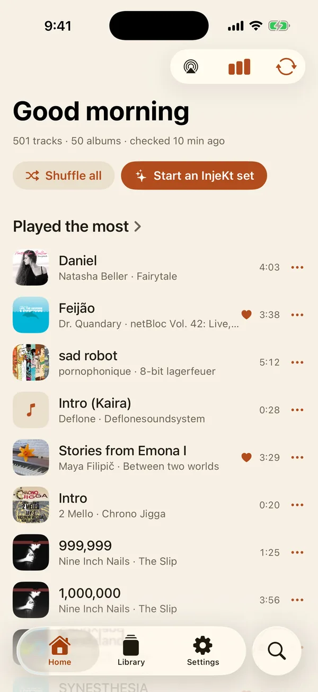
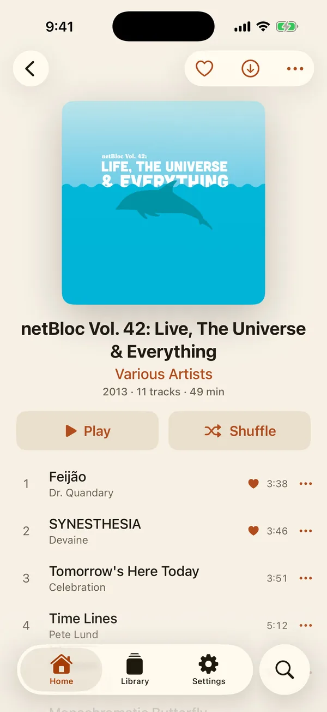
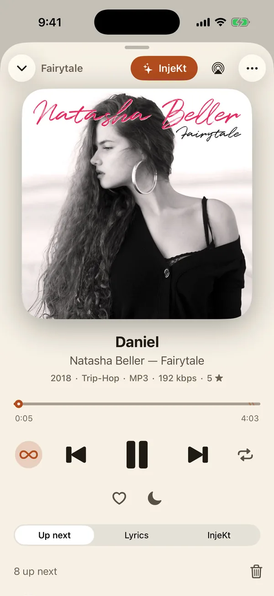
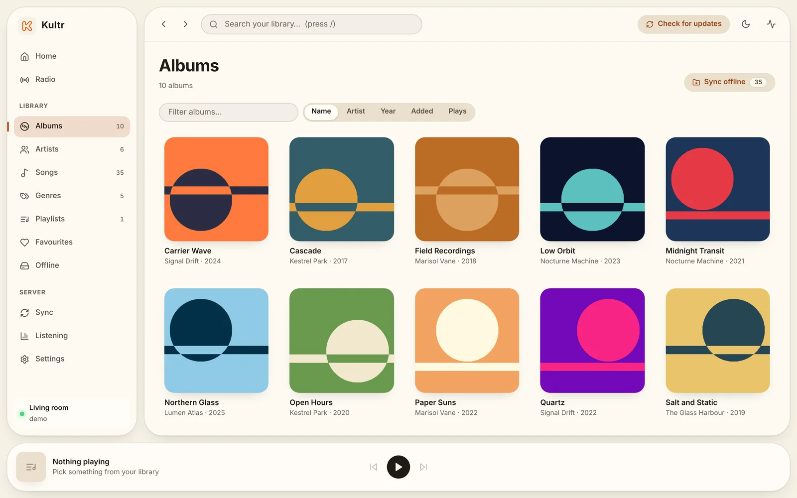

Your library, mixed like a DJ.
Kultr is a music player for your Navidrome server, in the browser, on Android and on iPhone. On a phone or a computer it plays the music stored there too.




What it does
InjeKt
Tracks blend like a DJ set: tempo-matched, landing on the downbeat, with the basslines swapped. Or plain crossfades and gapless albums.
Karousel
Tap shuffle twice, and when the queue runs out, music like what was playing keeps coming.
Stations
Endless mixes from your own library, such as Night Drive or Deep Focus, or built from your own rules.
Energy planner
Draw how the next hour should feel, calm to peak, and get a set whose tracks follow the line and mix.
Playlists that build themselves
At the bottom of a playlist, songs that would fit. Add one and the suggestions turn to songs like it.
Your own files
Play the music stored on your phone or computer, with no server and no account.
Right in the notification
Switch between shuffle, repeat, repeat one and Karousel, and like the song, right beside the controls.
AndroidInstant and offline
Your whole library is kept on the device, so browsing and search are instant. Download anything to play offline.
The same everywhere
Plays, favourites and ratings live on your Navidrome, and settings move between the browser, Android and iPhone.
Get Kultr
Browser
Any current browserThe full app, nothing to install. It connects straight to your Navidrome, and you can install it as an app from the browser.
Or host it yourself.
Android
Android 8.0 or laterInstall the APK once; after that, Kultr updates itself from inside the app.
iPhone
iOS 26 or laterNot on the App Store: you install it yourself with a free Apple ID. Add Kultr’s source to SideStore or AltStore and updates come to you.
Kultr is vibecoded with Claude Code: the apps and this website were produced by prompting it rather than typed by hand. It is free and open source under the Apache 2.0 licence.